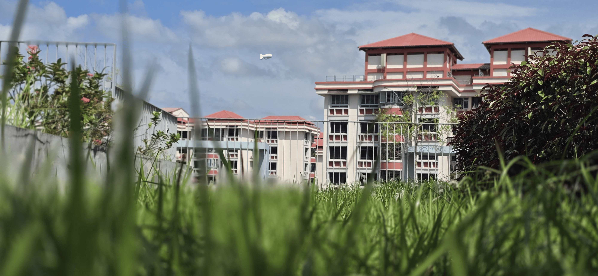
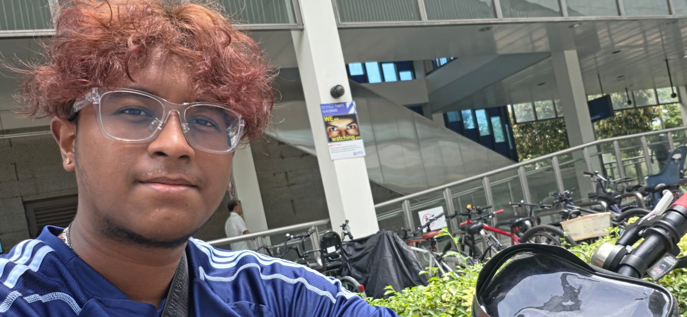

West Coast Park
Taken while on a journey to Pasir Panjang.

Bukit Gombak, Little Guilin
Shiva's favourite rock.

Bukit Timah Railway Station
An old railway station once served by KTM trains.

New Nanyang Arch
The newer Nanyang Arch in Yunnan Park at NTU.

Jurong West
Taken on a carpark rooftop garden in Jurong West.

Old Jurong Railway Bridge
One of the bridges that carried the Jurong Railway, crossing over Sungei Ulu Pandan.

Bukit Panjang
Shiva reuniting with his bike at the Bukit Panjang LRT station.